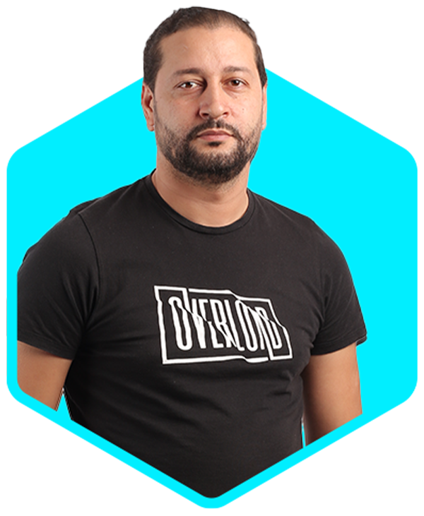
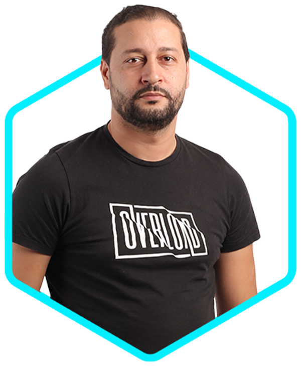

Latest Project


Walid est un Responsable IT expérimenté, spécialisé dans la gestion des infrastructures cloud et de divers services informatiques. Il excelle dans l’exploitation de son expertise technique et de ses compétences en leadership afin d’améliorer l’efficacité organisationnelle et de favoriser l’innovation.
Download CV

Un IT Manager est responsable de la supervision et de la gestion de toutes les activités liées aux technologies de l'information dans une organisation, incluant la stratégie IT, la gestion des équipes techniques, et la sécurité des données. Son objectif est d'aligner la technologie avec les stratégies d'affaires pour favoriser la réussite de l'entreprise. La Cloud Administration concerne la gestion des services cloud, y compris la configuration, la sécurité, et le suivi de la performance. Elle permet aux entreprises de tirer pleinement parti de la flexibilité et de l'efficacité du cloud, en assurant l'utilisation optimale et sécurisée de ces services.
Read Moreconcerne la gestion des services cloud, y compris la configuration, la sécurité, et le suivi de la performance. Elle permet aux entreprises de tirer pleinement parti de la flexibilité et de l'efficacité du cloud.
Read MoreLa Network and System Administration (administration de réseaux et de systèmes) englobe la gestion, la configuration et le maintien des systèmes informatiques et des réseaux d'une organisation.
Read MoreLe Led Mapping Screen with Resolume fait référence à l'utilisation du logiciel Resolume pour la création et la gestion de contenus visuels projetés sur des écrans à LED via la technique du mapping. La régie streaming se réfère à l'ensemble des équipements et des logiciels utilisés pour la diffusion en direct (streaming) de contenu vidéo sur internet. Elle inclut la capture vidéo et audio.
Read More